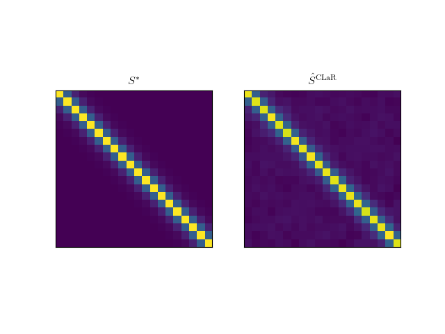

Note
Click here to download the full example code
The example runs CLaR on simulated data.
Out:
/home/mathurin/workspace/scikit-learn/sklearn/utils/deprecation.py:143: DeprecationWarning: The sklearn.linear_model.cd_fast module is deprecated in version 0.22 and will be removed in version 0.24. The corresponding classes / functions should instead be imported from sklearn.linear_model. Anything that cannot be imported from sklearn.linear_model is now part of the private API.
warnings.warn(message, DeprecationWarning)
/home/mathurin/workspace/CLaR/clar/utils.py:83: NumbaPerformanceWarning: '@' is faster on contiguous arrays, called on (array(float64, 2d, A), array(float64, 2d, C))
eigvecs @ (1 / eigvals * eigvecs.T)
/home/mathurin/miniconda3/lib/python3.7/site-packages/numba/typing/npydecl.py:977: NumbaPerformanceWarning: '@' is faster on contiguous arrays, called on (array(float64, 2d, A), array(float64, 2d, C))
warnings.warn(NumbaPerformanceWarning(msg))
alpha = 1.53e-03
sigma_min = 4.00e-04
--------- CLAR -----------------
/home/mathurin/workspace/CLaR/clar/duality_gap.py:150: NumbaPerformanceWarning: '@' is faster on contiguous arrays, called on (array(float64, 2d, C), array(float64, 2d, A))
S_inv_R[l, :, :] = S_inv @ R_all_epochs[l, :, :]
/home/mathurin/miniconda3/lib/python3.7/site-packages/numba/typing/npydecl.py:977: NumbaPerformanceWarning: '@' is faster on contiguous arrays, called on (array(float64, 2d, C), array(float64, 2d, A))
warnings.warn(NumbaPerformanceWarning(msg))
------------------------
First primal: 7.78e-01
/home/mathurin/workspace/CLaR/clar/solvers.py:363: NumbaPerformanceWarning: '@' is faster on contiguous arrays, called on (array(float64, 1d, F), array(float64, 1d, A))
L[j] = X[:, j] @ S_inv_X[:, j]
/home/mathurin/workspace/CLaR/clar/solvers.py:375: NumbaPerformanceWarning: '@' is faster on contiguous arrays, called on (array(float64, 2d, A), array(float64, 2d, A))
R += X[:, j:j+1] @ B[j:j+1, :]
/home/mathurin/workspace/CLaR/clar/solvers.py:377: NumbaPerformanceWarning: '@' is faster on contiguous arrays, called on (array(float64, 2d, A), array(float64, 2d, A))
S_inv_R += S_inv_X[:, j:j+1] @ B[j:j+1, :]
/home/mathurin/workspace/CLaR/clar/solvers.py:380: NumbaPerformanceWarning: '@' is faster on contiguous arrays, called on (array(float64, 2d, A), array(float64, 2d, F))
X[:, j:j+1].T @ S_inv_R / L[j],
/home/mathurin/workspace/CLaR/clar/solvers.py:385: NumbaPerformanceWarning: '@' is faster on contiguous arrays, called on (array(float64, 2d, A), array(float64, 2d, A))
R -= X[:, j:j+1] @ B[j:j+1, :]
/home/mathurin/workspace/CLaR/clar/solvers.py:387: NumbaPerformanceWarning: '@' is faster on contiguous arrays, called on (array(float64, 2d, A), array(float64, 2d, A))
S_inv_R -= S_inv_X[:, j:j+1] @ B[j:j+1, :]
/home/mathurin/miniconda3/lib/python3.7/site-packages/numba/typing/npydecl.py:977: NumbaPerformanceWarning: '@' is faster on contiguous arrays, called on (array(float64, 1d, F), array(float64, 1d, A))
warnings.warn(NumbaPerformanceWarning(msg))
/home/mathurin/miniconda3/lib/python3.7/site-packages/numba/typing/npydecl.py:977: NumbaPerformanceWarning: '@' is faster on contiguous arrays, called on (array(float64, 2d, A), array(float64, 2d, A))
warnings.warn(NumbaPerformanceWarning(msg))
/home/mathurin/miniconda3/lib/python3.7/site-packages/numba/typing/npydecl.py:977: NumbaPerformanceWarning: '@' is faster on contiguous arrays, called on (array(float64, 2d, A), array(float64, 2d, F))
warnings.warn(NumbaPerformanceWarning(msg))
/home/mathurin/miniconda3/lib/python3.7/site-packages/numba/typing/npydecl.py:977: NumbaPerformanceWarning: '@' is faster on contiguous arrays, called on (array(float64, 2d, A), array(float64, 2d, A))
warnings.warn(NumbaPerformanceWarning(msg))
p_obj: 7.401050e-01
d_obj: 6.786024e-01
iteration: 0, gap: 6.1503e-02
p_obj: 7.219445e-01
d_obj: 7.219445e-01
iteration: 50, gap: 2.2396e-08
/home/mathurin/workspace/CLaR/examples/plot_covariance_estimate.py:72: UserWarning: Matplotlib is currently using agg, which is a non-GUI backend, so cannot show the figure.
plt.show(block=False)
TP: 3
FP: 3
import numpy as np
import matplotlib
import matplotlib.pyplot as plt
from numpy.linalg import norm
from clar.solvers import solver
from clar.utils import get_alpha_max_me, get_sigma_min, get_alpha_max
from clar.data.artificial import get_data_me
from clar.utils import get_sigma_min, get_alpha_max
rho_noise = 0.3
SNR = 0.5
n_channels = 20
n_times = 30
n_sources = 10
n_epochs = 50
n_active = 3
gap_freq = 50
update_S_freq = 10
n_iter = 10**4
tol = 1e-7
X, all_epochs, B_star, S_star = get_data_me(
dictionary_type="Gaussian", noise_type="Gaussian_multivariate",
n_epochs=n_epochs, n_channels=n_channels, n_times=n_times,
n_sources=n_sources, n_active=n_active, rho_noise=rho_noise,
SNR=SNR)
S_star = S_star[-1]
Y = np.mean(all_epochs, axis=0)
sigma_min = get_sigma_min(Y)
alpha_max = get_alpha_max_me(X, all_epochs, sigma_min)
alpha = alpha_max / 5
print("alpha = %.2e" % alpha)
print("sigma_min = %.2e" % sigma_min)
B_clar, S_inv, E, gaps_me = solver(
X, all_epochs, alpha, alpha_max, sigma_min, B0=None,
n_iter=n_iter, gap_freq=50,
S_freq=update_S_freq, tol=tol, pb_name="CLAR")
gap_me = gaps_me[-1]
assert gap_me < tol
try:
matplotlib.rcParams["text.usetex"] = True
except:
pass
fig, axarr = plt.subplots(1, 2)
S = np.linalg.inv(S_inv)
labels = [r"$S^*$", r"$\hat S^{\mathrm{CLaR}}$"]
for ax, S, label in zip(axarr, [S_star, S], labels):
ax.imshow(S)
ax.grid(True)
ax.set_xticks([])
ax.set_yticks([])
ax.set_title(label)
plt.show(block=False)
supp = np.where(B_clar.any(axis=1))[0]
true_supp = np.where(B_star.any(axis=1))[0]
TP = len(np.intersect1d(supp, true_supp))
FP = len(supp) - TP
print("TP: %d" % TP)
print("FP: %d" % TP)
Total running time of the script: ( 0 minutes 8.352 seconds)